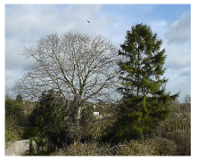
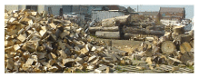
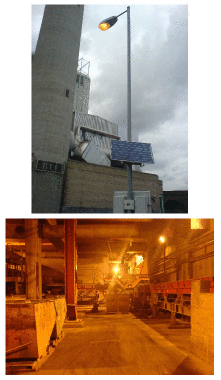

D Solar II

Figure D.1. Two trees.
In chapter 6 we listed four solar biomass options:
- “Coal substitution.”
- “Petroleum substitution.”
- Food for humans or other animals.
- Incineration of agricultural by-products.
We’ll estimate the maximum plausible contribution of each of these processes in turn. In practice, many of these methods require so much energy to be put in along the way that they are scarcely net contributors (figure 6.14). But in what follows, I’ll ignore such embodied-energy costs.
Energy crops as a coal substitute
If we grow in Britain energy crops such as willow, miscanthus, or poplar (which have an average power of 0.5 W per square metre of land), then shove them in a 40%-efficient power station, the resulting power per unit area is 0.2 W/m2. [1] If one eighth of Britain (500 m2 per person) were covered in these plantations, the resulting power would be 2.5 kWh/d per person.
Petroleum substitution
(Figure omitted from this edition: third-party rights.)
Figure D.2. Oilseed rape. If used to create biodiesel, the power per unit area of rape is 0.13 W/m2. Photo by Tim Dunne.
There are several ways to turn plants into liquid fuels. I’ll express the potential of each method in terms of its power per unit area (as in figure 6.11).
Britain’s main biodiesel crop, rape
Typically, rape is sown in September and harvested the following August. Currently 450 000 hectares of oilseed rape are grown in the UK each year. (That’s 2% of the UK.) Fields of rape produce 1200 litres of biodiesel per hectare per year; biodiesel has an energy of 9.8 kWh per litre; [2] so that’s a power per unit area of 0.13 W/m2.
If we used 25% of Britain for oilseed rape, we’d obtain biodiesel with an energy content of 3.1 kWh/d per person.
Sugar beet to ethanol
Sugar beet, in the UK, delivers an impressive yield of 53 t per hectare per year. And 1 t of sugar beet makes 108 litres of bioethanol. Bioethanol has an energy density of 6 kWh per litre, so this process has a power per unit area of 0.4 W/m2, not accounting for energy inputs required. [3]
Bioethanol from sugar cane
| Material | Energy density (kWh/kg) |
|---|---|
| softwood | |
| – air dried | 4.4 |
| – oven dried | 5.5 |
| hardwood | |
| – air dried | 3.75 |
| – oven dried | 5.0 |
| white office paper | 4.0 |
| glossy paper | 4.1 |
| newspaper | 4.9 |
| cardboard | 4.5 |
| coal | 8 |
| straw | 4.2 |
| poultry litter | 2.4 |
| general indust’l waste | 4.4 |
| hospital waste | 3.9 |
| municipal solid waste | 2.6 |
| refuse-derived waste | 5.1 |
| tyres | 8.9 |
Table D.3. Calorific value of wood and similar things. Sources: Yaros (1997); Ucuncu (1993), Digest of UK Energy Statistics 2005.
Where sugar cane can be produced (e.g., Brazil) production is 80 tons per hectare per year, which yields about 6500 l of ethanol. Bioethanol has an energy density of 6 kWh per litre, so this process has a power per unit area of 0.5 W/m2.
Bioethanol from corn in the USA
1 acre produces 122 bushels of corn per year, which makes 122 x 2.6 US gallons of ethanol, which at 84000 BTU per gallon would mean a power per unit area of 0.2 W/m2; however, the energy inputs required to process the corn into ethanol amount to 83,000 BTU per gallon; so 99% of the energy produced is used up by the processing, and the net power per unit area is about 0.002 W/m2. The only way to get significant net power from the corn-to-ethanol process is to ensure that all co-products are exploited; including the energy in the co-products, the net power per unit area is about 0.05 W/m2. [4]
Cellulosic ethanol from switchgrass
Cellulosic ethanol – the wonderful “next generation” biofuel? Schmer et al. (2008) found that the net energy yield of switchgrass grown over five years on marginal cropland on 10 farms in the midcontinental US was 60 GJ per hectare per year, which is 0.2 W/m2. “This is a baseline study that represents the genetic material and agronomic technology available for switchgrass production in 2000 and 2001, when the fields were planted. Improved genetics and agronomics may further enhance energy sustainability and biofuel yield of switchgrass.” [5]
Jatropha also has low power per unit area

Jatropha is an oil-bearing crop that grows best in dry tropical regions (300– 1000 mm rain per year). It likes temperatures 20–28 °C. The projected yield in hot countries on good land is 1600 litres of biodiesel per hectare per year. That’s a power per unit area of 0.18 W/m2. On wasteland, the yield is 583 litres per hectare per year. That’s 0.065 W/m2. [6]
If people decided to use 10% of Africa to generate 0.065 W/m2, and shared this power between six billion people, what would we all get? 0.8 kWh/d/p. For comparison, world oil consumption is 80 million barrels per day, which, shared between six billion people, is 23 kWh/d/p. So even if all of Africa were covered with jatropha plantations, the power produced would be only one third of world oil consumption.
What about algae?
Algae are just plants, so everything I’ve said so far applies to algae. Slimy underwater plants are no more efficient at photosynthesis than their terrestrial cousins. But there is one trick that I haven’t discussed, which is standard practice in the algae-to-biodiesel community: they grow their algae in water heavily enriched with carbon dioxide, which might be collected from power stations or other industrial facilities. It takes much less effort for plants to photosynthesize if the carbon dioxide has already been concentrated for them. In a sunny spot in America, in ponds fed with concentrated CO2 (concentrated to 10%), Ron Putt of Auburn University says that algae can grow at 30 g per square metre per day, producing 0.01 litres of biodiesel per square metre per day. [7] This corresponds to a power per unit pond area of 4 W/m2 – similar to the Bavaria photovoltaic farm. If you wanted to drive a typical car (doing 12 km per litre) a distance of 50 km per day, then you’d need 420 square metres of algae-ponds just to power your car; for comparison, the area of the UK per person is 4000 square metres, of which 69 m2 is water (figure 6.8). Please don’t forget that it’s essential to feed these ponds with concentrated carbon dioxide. So this technology would be limited both by land area – how much of the UK we could turn into algal ponds – and by the availability of concentrated CO2, the capture of which would have an energy cost (a topic discussed in Chapters 23 and 31). Let’s check the limit imposed by the concentrated CO2. To grow 30 g of algae per m2 per day would require at least 60 g of CO2 per m2 per day (because the CO2 molecule has more mass per carbon atom than the molecules in algae). If all the CO2 from all UK power stations were captured (roughly 21⁄2 tons per year per person), it could service 230 square metres per person of the algal ponds described above – roughly 6% of the country. This area would deliver biodiesel with a power of 24 kWh per day per person, assuming that the numbers for sunny America apply here. A plausible vision? Perhaps on one tenth of that scale? I’ll leave it to you to decide.
What about algae in the sea?
Remember what I just said: the algae-to-biodiesel posse always feed their algae concentrated CO2. If you’re going out to sea, presumably pumping CO2 into it won’t be an option. And without the concentrated CO2, the productivity of algae drops 100-fold. For algae in the sea to make a difference, a country-sized harvesting area in the sea would be required.
What about algae that produce hydrogen?
Trying to get slime to produce hydrogen in sunlight is a smart idea because it cuts out a load of chemical steps normally performed by carbohydrate-producing plants. Every chemical step reduces efficiency a little. Hydrogen can be produced directly by the photosynthetic system, right at step one. A research study from the National Renewable Energy Laboratory in Colorado predicted that a reactor filled with genetically-modified green algae, covering an area of 11 hectares in the Arizona desert, could produce 300 kg of hydrogen per day. [8] Hydrogen contains 39 kWh per kg, so this algae-to-hydrogen facility would deliver a power per unit area of 4.4 W/m2. Taking into account the estimated electricity required to run the facility, the net power delivered would be reduced to 3.6 W/m2. That strikes me as still quite a promising number – compare it with the Bavarian solar photovoltaic farm, for example (5 W/m2).
Food for humans or other animals
Grain crops such as wheat, oats, barley, and corn have an energy density of about 4 kWh per kg. In the UK, wheat yields of 7.7 tons per hectare per year are typical. If the wheat is eaten by an animal, the power per unit area of this process is 0.34 W/m2. If 2800 m2 per person of Britain (that’s all agricultural land) were devoted to the growth of crops like these, the chemical energy generated would be about 24 kWh/d per person.
Incineration of agricultural by-products
We found a moment ago that the power per unit area of a biomass power station burning the best energy crops is 0.2 W/m2. If instead we grow crops for food, and put the left-overs that we don’t eat into a power station – or if we feed the food to chickens and put the left-overs that come out of the chickens’ back ends into a power station – what power could be delivered per unit area of farmland? Let’s make a rough guess, then take a look at some real data. For a wild guess, let’s imagine that by-products are harvested from half of the area of Britain (2000 m2 per person) and trucked to power stations, and that general agricultural by-products deliver 10% as much power per unit area as the best energy crops: 0.02 W/m2. Multiplying this by 2000 m2 we get 1 kWh per day per person.
Have I been unfair to agricultural garbage in making this wild guess? We can re-estimate the plausible production from agricultural left-overs by scaling up the prototype straw-burning power station at Elean in East Anglia. [9] Elean’s power output is 36 MW, and it uses 200 000 tons per year from land located within a 50-mile radius. If we assume this density can be replicated across the whole country, the Elean model offers 0.002 W/m2. At 4000 m2 per person, that’s 8 W per person, or 0.2 kWh/day per person.
Let’s calculate this another way. UK straw production is 10 million tons per year, or 0.46 kg per day per person. At 4.2 kWh per kg, this straw has a chemical energy of 2 kWh per day per person. If all the straw were burned in 30%-efficient power stations – a proposal that wouldn’t go down well with farm animals, who have other uses for straw – the electricity generated would be 0.6 kWh/d per person.
Landfill methane gas
At present, much of the methane gas leaking out of rubbish tips comes from biological materials, especially waste food. So, as long as we keep throwing away things like food and newspapers, landfill gas is a sustainable energy source – plus, burning that methane might be a good idea from a climate-change perspective, since methane is a stronger greenhouse-gas than CO2. A landfill site receiving 7.5 million tons of household waste per year can generate 50 000 m3 per hour of methane.
In 1994, landfill methane emissions were estimated to be 0.05 m3 per person per day, which has a chemical energy of 0.5 kWh/d per person, and would generate 0.2 kWh(e)/d per person, if it were all converted to electricity with 40% efficiency. Landfill gas emissions are declining because of changes in legislation, and are now roughly 50% lower. [10]
Burning household waste

Figure D.4. SELCHP – your trash is their business.
SELCHP (“South East London Combined Heat and Power”) [www.selchp. com] is a 35 MW power station that is paid to burn 420 kt per year of blackbag waste from the London area. They burn the waste as a whole, without sorting. After burning, ferrous metals are removed for recycling, hazardous wastes are filtered out and sent to a special landfill site, and the remaining ash is sent for reprocessing into recycled material for road building or construction use. The calorific value of the waste is 2.5 kWh/kg, and the thermal efficiency of the power station is about 21%, so each 1 kg of waste gets turned into 0.5 kWh of electricity. The carbon emissions are about 1000 g CO2 per kWh. Of the 35 MW generated, about 4 MW is used by the plant itself to run its machinery and filtering processes.
Scaling this idea up, if every borough had one of these, and if everyone sent 1 kg per day of waste, then we’d get 0.5 kWh(e) per day per person from waste incineration.
This is similar to the figure estimated above for methane capture at landfill sites. And remember, we can’t have both. More waste incineration means less methane gas leaking out of landfill sites. See figure 27.2 and figure 27.3, for further data on waste incineration.